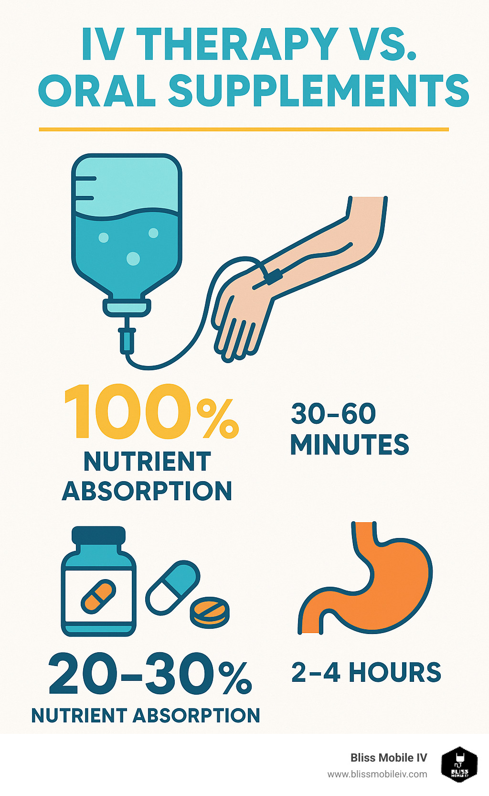
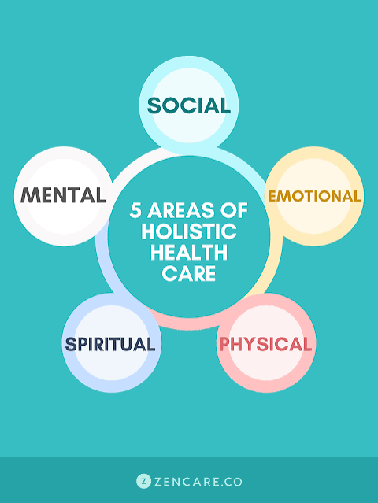

Luciana Stewart, FNP-BC — Serving Wake, Johnston, and Durham Counties
One Provider. One Plan.
Your Whole Health.
Clinical when you need it. Holistic because you deserve it. Welcome to a unified wellness experience led entirely by a Board-Certified Family Nurse Practitioner.
Your health doesn’t exist in silos — and neither should your care. We unify your health plan under one consistent provider-patient relationship.
- 🩺 NP-Led Continuity: Care overseen by Luciana Stewart, FNP-BC.
- 🌿 Blended Framework: Harmonizing clinical metrics with holistic vitality.
- 📈 Custom Trajectories: Flexible configurations suited directly to your lifecycle goals.
The Wellness Continuum
The Wellness Continuum is the organizing framework that sets Angels of Mercy apart from every other wellness provider in the area. Rather than offering an isolated menu of treatments, the Continuum maps five services to five stages of a single, integrated care pathway. Each stage builds on the others, and a single nurse practitioner — Luciana Stewart, FNP-BC — oversees every step, ensuring clinical coherence and personalized continuity. The five stages are designed to be intuitive. Each one is named with an active verb that communicates the patient’s journey and is paired with a brand color for immediate visual recognition across all materials.
IV Hydration Therapy
Life doesn’t slow down just because your body is running on empty. Whether you’re recovering from illness, pushing through a demanding schedule, battling jet lag, or simply feeling depleted in ways that sleep and water can’t fix — you deserve to feel restored. Our customized IV drips deliver fluids, vitamins, minerals, and electrolytes directly into your bloodstream, bypassing the digestive system entirely for 100% immediate absorption. That means faster relief, stronger results, and a noticeable difference from the moment your session begins.
The Difference: Unlike spa-style IV bars where you choose from a fixed menu, every drip at Angels of Mercy is formulated and administered by a board-certified nurse practitioner based on your individual health assessment.
👉 Many of our IV hydration patients also benefit from vitamin injections — quick, targeted nutrient boosts that maintain the replenished feeling between IV sessions.

Vitamin Injections
Running low on energy, dealing with brain fog, or know your diet has gaps? You’re not alone — and a daily multivitamin may not be enough. When your body can’t absorb what it needs through digestion alone, targeted supplementation can make a measurable difference in how you feel every day. Our targeted intramuscular injections — including B12, Vitamin D, B-Complex, and specialty blends — replenish what your body is missing faster and more effectively than oral supplements alone. Delivered directly into muscle tissue, these injections bypass the digestive system for superior bioavailability.
The Difference: Our nurse practitioner reviews your health history and, when appropriate, recommends lab work to identify specific deficiencies before building a supplementation plan. Every injection is part of your broader wellness picture — not an isolated service.
👉 Vitamin injections give your body the raw materials. Wellness coaching teaches you how to protect and sustain those gains through daily choices.
Weight Management
Tried every diet and nothing sticks? You’re not failing — you’ve been missing the medical piece. Weight is not simply about willpower or calories. It’s influenced by metabolism, hormones, sleep quality, stress, nutrition, and underlying health conditions that no commercial diet program is equipped to address. Our medically supervised weight management program goes beyond calorie counting. We address the root factors driving your weight with a plan built specifically for your body and your life. That plan may include nutritional guidance, metabolic assessment, medication management when appropriate, and ongoing clinical monitoring.
The Difference: Unlike commercial diet programs, our weight management services are led by a board-certified nurse practitioner who understands the complex medical factors that affect weight. You’re not getting a one-size-fits-all protocol — you’re getting a clinical partner.
👉 Weight management gives you the medical plan. Wellness coaching gives you the daily tools to sustain it. They’re stronger together.
Wellness Coaching
Want lasting change — not just a quick fix? If you’ve tried diets, apps, and willpower but nothing sticks, you don’t need more motivation — you need a clinically trained guide who understands the science behind the struggle. Our one-on-one wellness coaching helps you build sustainable habits around nutrition, stress management, sleep, and lifestyle. Together, we identify the patterns that hold you back, set realistic goals that honor where you are today, and create an actionable plan that moves you forward — one step at a time.
The Difference: Because our coach is also a board-certified nurse practitioner, your plan is informed by real medical knowledge — not generic advice pulled from the internet. We understand how your body works, what your labs say, and how your lifestyle choices connect to your clinical health.
👉 Wellness coaching builds the habits. Holistic services nourish the spirit. Together, they create lasting transformation from the inside out.

Holistic Health Services
Ready to nourish your whole self — mind, body, and spirit? True health isn’t just the absence of illness. It’s a state of vitality that encompasses your emotional well-being, your spiritual grounding, and the daily rituals that sustain you. Yet traditional medicine often overlooks these dimensions entirely. Our integrative therapies complement your clinical treatments by addressing the emotional, spiritual, and lifestyle dimensions of health that conventional care leaves behind. From mindfulness practices and stress-reduction techniques to energy work and guided self-care, our holistic services are designed to meet you where you are.
The Difference: Our holistic services aren’t a replacement for clinical care — they’re the missing piece. When we address mind and spirit alongside body, the results go deeper and last longer. And because a nurse practitioner oversees your entire care plan, every holistic recommendation is safe, compatible with your health profile, and coordinated with your clinical treatments.
“You don’t have to choose between clinical and holistic. At Angels of Mercy, you get both — coordinated by the same provider who knows your full health story.”
Clinical Safety & Standards
Every infusion, injection, and strategic plan is executed with strict adherence to rigorous safety baselines, clinical oversight parameters, and patient protections.
Clinical Oversight & Staffing
- All care directives directly developed and verified by Luciana Stewart, FNP-BC.
- Standing medical order architectures reviewed regularly under regulatory baselines.
- Scope of practice strictly aligned with the NC Board of Nursing and NC Medical Board.
- IV-certified nursing operators maintaining annual hands-on validation modules.
Infection Control & Logistics
- Strict compliance with OSHA Bloodborne Pathogens standard sets.
- Exclusive single-use sterile medical grade supply sets utilized per procedure.
- Aseptic site insertion protocols and multi-tier vital assessment loops verified.
- On-site emergency intervention protocols maintained under standing algorithmic controls.
Begin Your Continuum Pathway
We meet you where you are and move you toward where you want to be.
- Comprehensive baseline intake verification to evaluate diagnostic prerequisites.
- Care coordination mapped completely to personal metric definitions.
- Transparent itemized cost validation prior to clinical execution.
Scan with mobile devices to instantly launch the appointment engine.
Angels of Mercy Health & Wellness Center, PLLC
📞 Clinical Direct Line: 919-624-9959
📧 Email Communications: nursingpride@angelsofmercyhomehealth.com